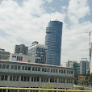

PLACE OF BIRTH
I was bor at Ledeta subcity in AddisAbaba.I want to say little about my birth place, It borders with the districts of Addis Ketema, Arada, Kirkos, Nifas Silk-Lafto and Kolfe Keranio
Current Residence
I am currently living in LegeTafo/LegeDadi.I want to say somthin about this marvelous place.Legetafo is located at the northern of the capital city,when we moved there the place was like rural area after sometimes it started to grow by a big rate,theere are two realstates of which one is very popular famous peoples,ofiicials live there.the real state is really amazing it's very big and full of beauty, we moved there when i was around 10 years old, me and my sisters almost grew there, now the Tafo we knew at the time is completely different ,it has become a vey big city, the weather is really good there are not much industries Generally LEGETAFO is perfect.